Dreem Headband
- Data transfer protocol for patients
- Data transfer protocol for professionals
- As a professional: do I need to do anything daily or all N days (for each patient using a specific device / app)?
- As a professional: do I need to do anything after each individual period of device / app use ended (for each patient using a specific device / app)?
- Verify Data Uploaded by Participant
- Login
- As a professional: do I need to do anything after the full periods of use of a specific device / app ends (for each patient using a specific device / app)?
- Original device setup and pairing
- Device pre-setup and configuration
- Device How To / setup for wear
- Troubleshooting/FAQ
- Device return
- Returned device processing and cleaning / an application use period for a participant has ended
- Device recycling and provisioning
General Device Introduction
 The Dreem 2 device is a wireless headband that can record, store, and automatically analyse brain function such as sleep activity, in real-time without any connection (e.g., Bluetooth, Wi-Fi, etc.).
The Dreem 2 device is a wireless headband that can record, store, and automatically analyse brain function such as sleep activity, in real-time without any connection (e.g., Bluetooth, Wi-Fi, etc.).
What does it record?
The headband had sensors on the front and back of the device that records brain wave activity and movement data, which is used to calculate sleep stages. This data is stored on the headband then uploaded to the Internet when the Dreem 2 headband is connected to Wi-Fi.
How is it used?
The Dreem 2 headband is worn on the head during sleeping. It has sensors embedded in the front and back parts of the headband to ensure it records accurate reading while you move during sleep. The headband is flexible and can be adjusted to accommodate all head shapes and sizes. The sensors within the Dreem 2 headband should be in direct contact with the skin similar to how it is positioned below.
Table 1:An overview of how the device is positioned on the head.
 |
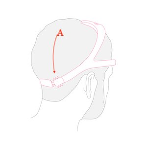 |  |
| Figure 1: The front sensors must be placed in the middle of the forehead. | Figure 2:The back sensors must be pushed against your scalp. | Figure 3: To ensure optimal support throughout the night, pull the upper arch backwards. |
Data transfer protocol for patients
As a patient: do I need to do anything on a daily basis or all N days?
Yes. On your first day of receiving the Dreem 2 headband you should connect it your home Wi-Fi. On days where you will be asked to wear the Dreem 2 headband you should: (i) adjust the headband placement to ensure it records accurate data; and (ii) charge it after a night’s wear. Detailed instructions for these activities are outlined in Section 6.
As a patient: do I need to do anything after each individual period of device / app use ended?
The Dreem 2 headband should be placed on charge after a night’s sleep. The battery lasts up to 12-hours and takes 3-hours to fully charge.
As a patient: do I need to do anything after my full periods of use of a specific device / app end?
Yes. After your full period of use ends in the trial, you must go to the study site. The research team will take the device and transfer any data that has not been uploaded.
Data transfer protocol for professionals
As a professional: do I need to do anything daily or all N days (for each patient using a specific device / app)?
Not applicable.
As a professional: do I need to do anything after each individual period of device / app use ended (for each patient using a specific device / app)?
Yes. After a participant has worn a device for 2days you shouldverify that they have connected the device to Wi-Fi and uploaded data.You can do thisthrough the Dreem 2 website as outlined below.
Verify Data Uploaded by Participant
Each participant will connect the provided Dreem 2 headband to their home Wi-Fi, which will automatically upload data to the Dreem 2 servers once the device is on charge. The Dreem 2 headband stores 80-hours of recording on a headband and so it is important to verify that the data has been uploaded and is of good quality (to ensure the headband is worn correctly). If it is not, then please contact the participant to provide further assistance.
Login
Data uploaded by each participant is stored on Dreem 2’s website (https://ts-viewer.rythm.co) and can be accessed using thesite credential on the provided_encrypted vault._To access this:
Records availability
Once logged in, you will then see a list of recordings, when they took place, their duration and on what device. For each recording, the email address associated with the provided Samsung smartphone, the device ID, the start time and the duration of the recording are listed.The “user” and “device” will help you identify which records to view.
Records are organised by upload order where the newest appears first. There are two types of records:
- Grey records are recordings that have been successfully uploaded to the servers.
- Red records are recordings that havenot been successfully uploaded to the server. This is typically due to having no Wi-Fi connection or the headband has not yet been plugged in.
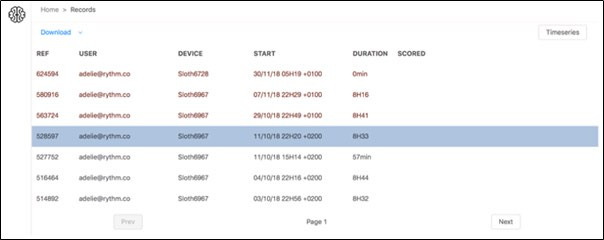
Fig. 12: Dreem 2 portal for viewing uploaded data
Record quality check assessment
The procedure to assess the quality of a recording is detailed below.
Step 1. Record data metrics check
On the home page, click on the desired record to display the record dashboard at the bottom of the screen (Figure 13). This provides further details based on signal quality for the chosen record.
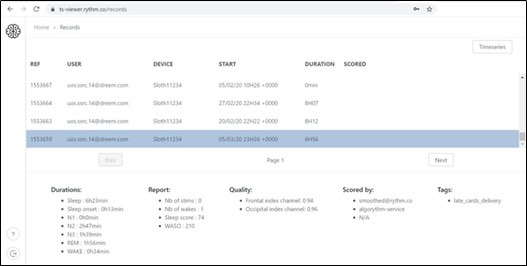
Fig. 13: Dreem 2 portal – Home page with record dashboard
Channel indexes of the recording
Under the ‘Quality’ section you will see the_frontal_and_occipital_index channels, which report apercentageto show the overall quality of the recording. The quality value is deemed satisfactory if it is >=0.7as outlined in Table 2:
Table 2: Average index channel quality thresholds
| Average index channel | Indication |
| 0.7-1 | Success |
| 0.55-0.69 | Borderline – Note as failure |
| 0.01-0.54 | Failure |
Step 2. Manually Verify Data Quality
Manual record inspection of the raw Dreem 2 data will need to be performed for each recording where the index channel is borderline or failure (< 0.69). Double-click on the desired record and a new page will appear where you can access to the entire raw recording.
1.Setting Workspace
By clicking the toolbox in the viewer, you will be able to set parameters for the viewing, such as epoch duration, channels displayed, etc.
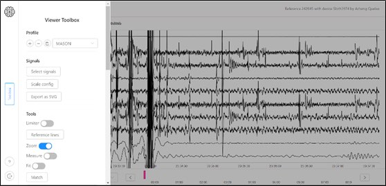
Figure 15. Morpheo Viewer with Toolbox open
2.Choosing Signals
Click ‘Select Signals’ in the toolbar (Figure 15) to configure all available signals. From the ‘select signals’ menu, you can drag any signal from ‘available’ to ‘selected’. This will allow visualisation of the channels raw data in the viewer. You can also drag the signal box up and down, to change its viewing location in the viewer. Press‘multiplot’at the bottom right to implement your desired workspace / montage.
Note: Scales and filters of record signals have been pre-processed. They are not necessary to set for Dreem 2 record inspections. The recommended workspace for record inspection includes:
-
- 7 EEG Channels.
- 1 accelerometer (Norm) channel that will detect subject movements (which can also result in loss of good quality signal).
3.Scroll through record
Press the right and left arrows (Figure 16) to move the signal viewing window forward or back by 10 seconds. Pressing the_enter_ button will move the window forward by 30 seconds (one epoch).
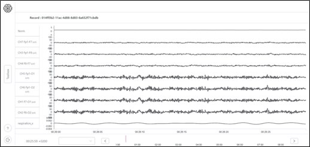
Figure 16. Morpheo Viewer Signal Selection Window
4.Record Inspection
Scroll through the record and note record quality of the EEG:good quality is determined if there are no missing data. Sleep onset, sleep biomarkers (sleep spindles, K-complexes, delta waves, etc.), and sleep stages should be visualised through the record in the EEG.
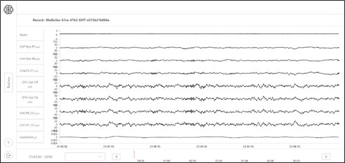
Figure 17: Good signal quality – Stage 2 sleep with sleep spindles is easily distinguished.
When these features cannot be detected, the epochs should be noted as poor quality signal. Over 2 hours of poor-quality signal will be noted as a record failure.
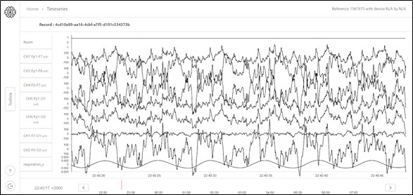
Figure 18: Poor signal quality- Sleep stage and biomarkers are not easily distinguished.
Records can have good signal quality in some channels with poor signal quality in other channels. The signal quality is still considered acceptable when one occipital and one frontal EEG channel has sleep stage / sleep biomarker deductible signals.
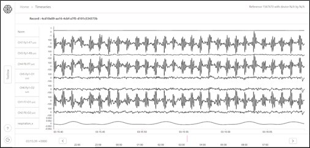
Figure 19: Acceptable signal quality - Poor signal originating from F7 sensor. However, one frontal and 3 occipital channels are of good quality. This is acceptable for good signal quality.
If the signal quality is not satisfactory, you may want to contact the patient to provide guidance on how to better place the headband to ensure optimal sleep signal quality.
As a professional: do I need to do anything after the full periods of use of a specific device / app ends (for each patient using a specific device / app)?
Yes. There arefive steps concerning data transfer that must be followed after the full study period:
- Connect the Dreem 2 headband to Wi-Fi toupload any remaining data.
- Log into the associated website to view anddownload this data to your work computer.
- Upload participant’s data to the IDEA-FAST data hub.
- Create alocal backup of the participant’s data on the provided external hard drive.
- Reinstallthe Dreem 2 app on the device smartphone before a new participant uses it.
1. Upload Data
All data from the Dreem 2 headband should be automatically uploaded by participants through their home Wi-Fi during the study period. After the full wear period, please connect the smartphone to Internet and setup the headband to a local Wi-Fi using instructions inSection 2. Once connected, place the headband on charge (see Section 2) and verify that the participant had no red records (i.e. data that is not uploaded) through Dreem 2’s Viewer web interface.
2. Downloading Data
Data that has been uploaded from the Dreem 2 headband will be stored on Dreem 2’s servers and can be viewed using theDreem 2 Viewer application. Please login using your site credentials as outlined in . Once logged in, you will see data from all participants across sites.USERis the ID of the smartphone (e.g.A40-5AF59F) and theDEVICEis the ID of the Dreem 2 headband (e.g.DRM-GE7FXG): both IDs will be attached as labels on the device.
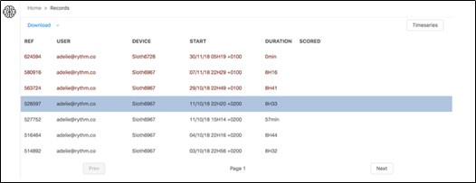
Figure 20: The Dreem 2 Viewer home page where you can view and download participant’s data.
Tap the “Device” column to sort all rows by device. Find the device you want to download data for by clicking the “Next” button at the bottom of the screen until the desired device appears.
Figure 21: The “Prev” and “Next buttons are used to navigate to other data.
Once you see rows where the device you wish to download data for appears, are ready to begin downloading data. If any of the rows are red, please refer to theupload data section above. Once ready, press Shift + Click each column that you want to download data for, and press “Download” located in the top left corner of the screen (Figure 20).
This data will be saved by default into your downloads folder located at:
C:\Users\YourUserName\Downloads
Please create a new folder on your desktop named “IDEA-FAST” where you can store all downloaded data by participant. For each participant, create a new folder inside IDEA-FAST named “{PHONEID}-{DEVICEID}”. Using the example phone ID (A40-5AF59F)and device ID (DRM-GE7FXG) above, this results in:
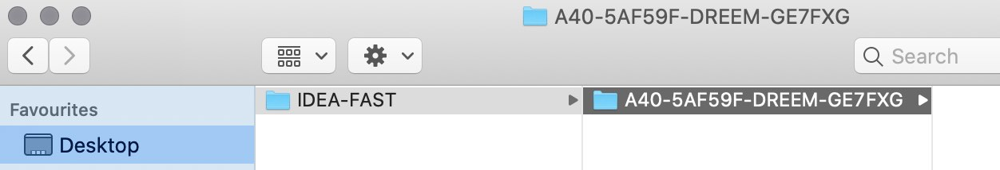
Figure 23:Store participant’s data on your desktop in a folder by phone ID and participant ID.
Data Overview
Data downloaded will vary in size depending on the length of sleep sessions. An overview of each file expected to be downloaded and estimated size is outlined below:
| File Type | File Description | Estimated Size (~5 days use) |
| .tar.gz | A zipped file containing raw data encoded in binary blobs. | 90-200MB |
| .h5 | Raw data in h5 format. | 300-500MB |
| .edf | The EEG and 3D accelerometer data in the European data format (EDF) | 150-400MB |
| .jpeg | The hypnogram image. | < 1MB |
| .txt | This file is presented as scoring files when extracting from a sleep-scoring software. The sleep-staging providing in this file is the Dreem 2-algorithm which is slightly different from the one (smoothed-Dreem 2-algorithm) that is used for visualisation on the app. | < 1MB |
3. Transfer Data to IDEA-FAST Data Hub
4. Create Data Backup on External Hard Drive
5. Reinstall Dreem 2 Application on Samsung Smartphone
The Dreem 2 mobile application should be reinstalled on the study smartphone prior to being used by another participant. This will delete any data associated with the previous participant. To do that press and hold the Dreem 2 icon that’s located on the home screen on the smartphone. A popup with four options will appear. Tap “App Info” and you will be taken to an options screen (Figure 24).
| 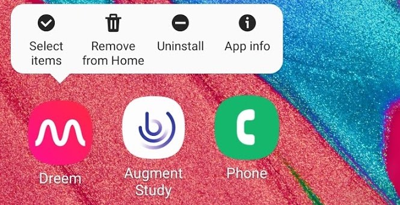 | 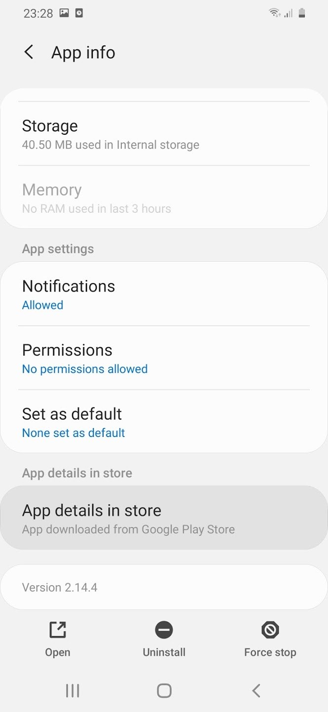 |
| Figure 24: Tap and hold on icon to view options. | Figure 25: Scroll to the bottom to view app. |
Scroll to the bottom and tap “App details in store” to view the app on the Google Play Store (Figure 25), which will display two options: “Uninstall” and “Open”.Tap Uninstall.
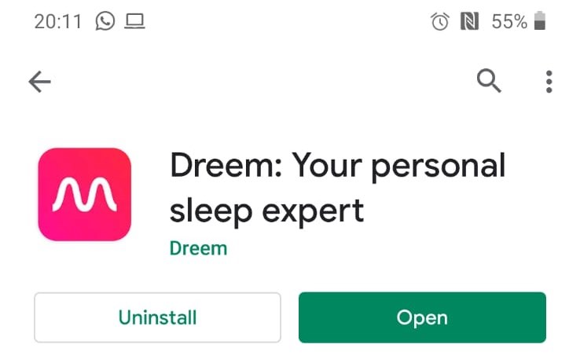
Figure 26: Viewing the Dreem 2 application on the Google Play Store.
After tapping uninstall, a popup box will appear (Figure 26). Tap OK to begin uninstalling.
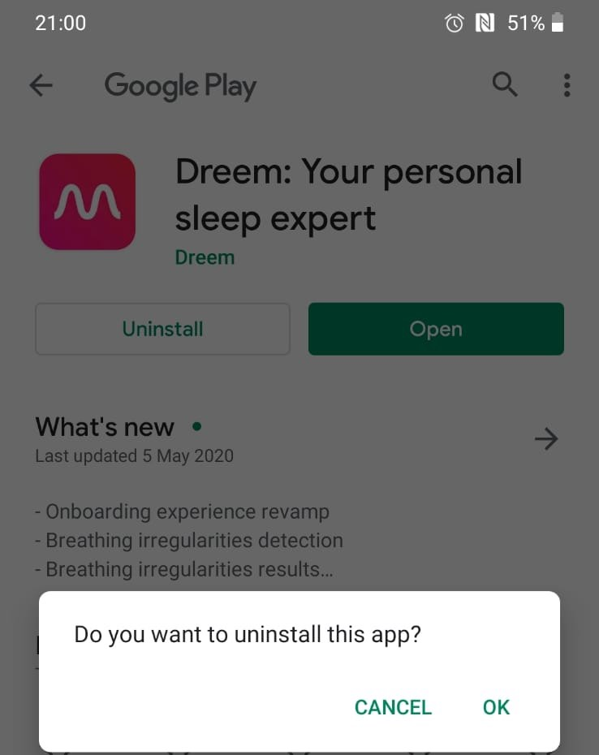
Figure 27:Uninstalling the Dreem 2 application.
Once the application is uninstalled, only an “Install” button will appear (Figure 28). Tap Install to begin installing the Dreem 2 application.
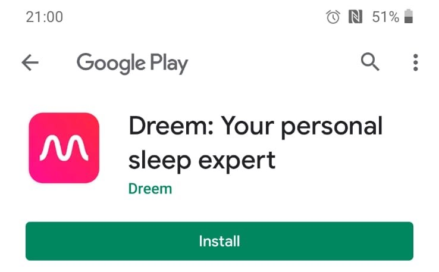
Figure 28: Installing the Dreem 2 application.
Once installed, tap “Open” (Figure 23) to Open the Dreem 2 application. Tap “I ALREADY HAVE AN ACCOUNT” on the home screen (Fig 26) and choose “Via Email” to log into the application (Fig 27).
| 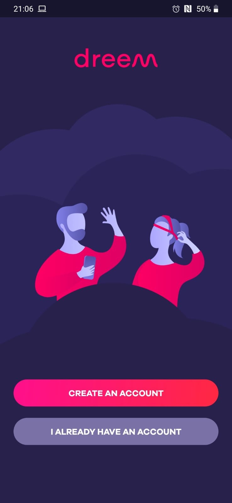 | 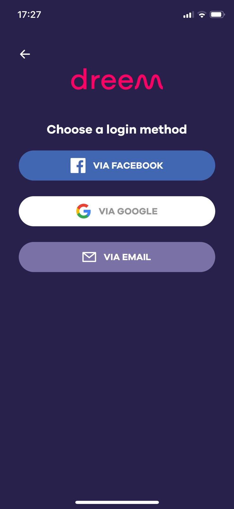 |
| Figure 26: Select “I already have an account” | Figure 27: Select “via email” to log in |
Enter the email address and password based on the device ID of the dream headset. The label on the headset is the device ID. You can find the associated email and password in the {ACCESS_ENCRYPTED_FAULT_INSTRUCTIONS}}.
Original device setup and pairing
If handling a device and it arrives new: what needs doing before it gets sent to a study centre?
Put into inventory management?
{DEVICE_INVENTORY_INSTRUCTIONS}
Needs firmware update?
Not applicable.
Pairing with a companion application?
Not applicable.
Any account setup required?
No. Accounts for the Dreem 2 mobile application (installed on the provided smartphone) and website (for clinical staff to view participant’s data) have been setup for each mobile phone and study site.
Account credentials for both the participants smartphone and cloud platform are available through an encrypted keychain. Please see {INSTRUCTIONS_TO_VIEW_PASSWORDS} for more details.
Needs pairing with hub device.
Not applicable.
Any assembly required?
The tightness of the headband needs to be adjusted by choosing an appropriate size of adjusters. A smaller size is recommended and should only be changed if the patient feels uncomfortable with the tightness.
Package together with which other devices for which study centre?
Not applicable.
If handling an application: what needs doing before a study centre can use the app?
Do we need to get accounts from the application provider?
Not applicable. The Dreem 2 mobile application will be preinstalled (including logged in) on the provided smartphone and ready for use by a participant. Dreem 2’sassociated website where clinical professionals can access, view and download data requires a separate login credentials.
Account credentials for both the participants smartphone and cloud platform are available through an encrypted vault. Please see {INSTRUCTIONS_TO_VIEW_PASSWORDS} for more details.
Can the software be downloaded, or do we need to make it available?
Not applicable. The Dreem 2 mobile application will be pre-installed on all provided Samsung devices.
Does it need to be installed on the hub devices?
Yes. The Dreem 2 application will come pre-installed and logged into the device hub smartphone using ideafast-{HUB_DEVICE_ID}@dreem.com as the login name.
Do we need to activate study accounts?
Not applicable. However, if you need to reinstall the mobile application please use the device hub email as outlined above. The associated password can be obtained through {INSTRUCTIONS_TO_VIEW_PASSWORDS}.
Device pre-setup and configuration
What sort of a device / application is this, what is it for and how does it work?
 The Dreem 2 device is a headband that records physiological data (EEG brain wave activity) and movement during sleep. The headband connects to a Wi-Fi and automatically uploads this data to the Dreem 2 cloud platform when on charge. A separate mobile application can show participant’s aggregated metrics of their sleep, such as sleep stages and movement.
The Dreem 2 device is a headband that records physiological data (EEG brain wave activity) and movement during sleep. The headband connects to a Wi-Fi and automatically uploads this data to the Dreem 2 cloud platform when on charge. A separate mobile application can show participant’s aggregated metrics of their sleep, such as sleep stages and movement.
What has already been done in pre-setup for the device or application?
The Dreem mobile application has been installed on the provided device hub (Samsung A40) and logged in using a pre-created account.
What will need to be done before a patient can start using this?
Any account setup required?
No. The Dreem 2 application will come pre-installed on the provided Samsung A40 smartphone. If you need to reinstall the mobile application, such as when a new participant uses it, youmust log in via the “email” option in the log screen. A set of email addresses and passwords to use are outlined in {INSTRUCTIONS_TO_VIEW_PASSWORDS}, which includes credentials to view and download participant’s data from Dreem 2’s website (Section N).
Needs pairing with hub-device?
Not applicable.
Any configuration / assembly required?
When logging in on the Dreem 2 App a Bluetooth connection will be required, so that it can communicate with the headband. The Dreem 2 headband requires a Wi-Fi connection to upload raw data from the headband to the server.
Device How To / setup for wear
What sort of a device / application is this, what is it for and how does it work?
The Dreem 2 device is a headband that records movement and brain activity data to better understand sleep behaviours as illustrated to the right. The headband uploads data from the device to a server using Wi-Fi and must be configured on your home internet. The Dreem 2 mobile application is used to connect to the headband through Bluetooth and to start sleep sessions.
Pairing your Smartphone with the Dreem 2 Headband
| Turn on your headband by pressing the power button located on the front of the headband. The power button will start blinking blue if your headband is charged, or orange if it needs to be charged. |
 |
 |
Now take the Samsung smartphone that you were provided. Tap the Dreem 2 icon (as illustrated to the right) and the application will open. |
| The smartphone will be logged in and you will see the home screen. After a few seconds, a popup appears indicating that your headband is pairing. |
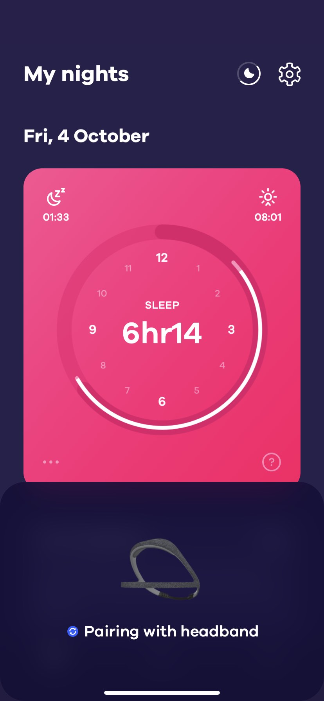 |
| 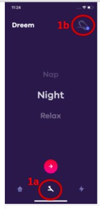 | Once paired, you can use the Dreem 2 application to check the_battery level_ of the headband and configure a_sleep session_ where the headband records data. To view these options, tap the  button on the bottom of the screen (1a). From there, tap the Dreem 2 headband icon in the top right corner (1b). button on the bottom of the screen (1a). From there, tap the Dreem 2 headband icon in the top right corner (1b). |
| You should now see the “STATUS” of your headband, including_Bluetooth connection_,battery status and_Wi-Fi connection_. A icon appears next to the Bluetooth icon (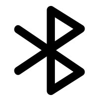) and Wi-Fi icon () to show that they aresuccessfully connected. The status of the battery is in orange to show that it is charging. |
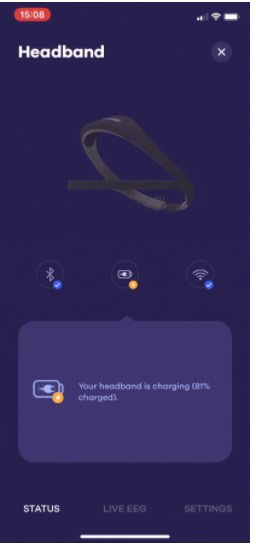 |
Are you having trouble connecting your headband to the app?
Please ensure thatyour headband is sufficiently charged and near the smartphone. If you continue to have issues,please restart your phone and headband by turning both off and on by holding the power button down on each device for 5 seconds.
Connecting to Wi-Fi (first use only)
| Press the power button on the top of the headband to turn it on. The headband you are pairing should be unplugged from a power source. | 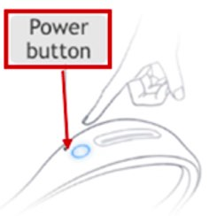 |
| Now take the Samsung smartphone that you were provided. Tap the Dreem 2 icon (as illustrated to the right) and the application will open. |
|
| Tap the button on the bottom of the screen (1a). From there, tap the Dreem 2 headband icon in the top right corner (1b). | 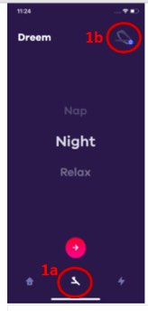 |
 |
The “Headband” screen will now appear. Tap “Settings” in the bottom right corner (2a). |
| Tap the”Headband Settings”(2a) and tap the “headband settings’ (2b) | 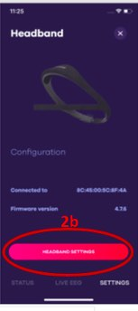 |
| 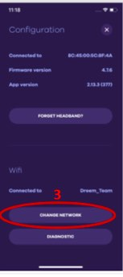 | TheConfigurationscreen will be shown. Tap “Find a Network” and select your home Wi-Fi and enter your password. |
| A blue circle with will appear on the headband on the Headband section of the app. Now you are connected to Wi-Fi and ready to begin using the Dreem 2 headband. If you are not ready to sleep, please turn off the headband by pressing and holding the power button for 3 seconds and the light on the front will turn off. |
 |
Wearing the headband
DREEM 2 is embedded with sensors located on thefrontandbackof the headband. To ensure optimal signal quality, it is essential that all the sensors are in direct contact with the skin on the forehead and scalp in the back part of the head. The headband should be adjusted on your first site visit.
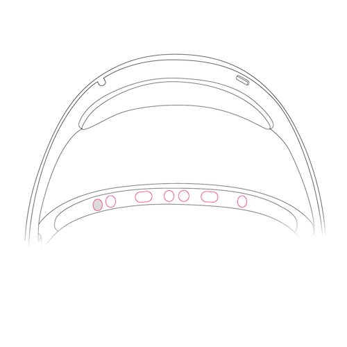
Figure N. 4 EEG electrodes for measuring brain activity and one pulse sensor (that lights green) to measure heart rate are located on the part of the headband worn on the forehead.
Adjusting the headband
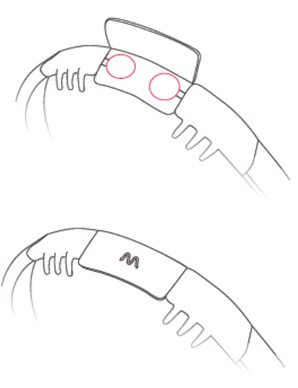There are three sizes of adjustment strips (S, M, L) (Fig. 3, a). The headband uses an elastic, Velcro strap to accommodate a variation of head sizes: three sizes of adjustment strap are provided (S, M, L). To adjust the size, detach the Velcro from the back of the headband, add a new strap, attach the red circles to Velcro and close it. A tighter headband will lead to better skin contact, resulting in more accurate data being recorded.
Positioning the headband
There are three steps to ensure the headband is placed firmly on the head for optimal recording.
|
Step 1: front headband Place the front part of the headband (the thinner part) against your forehead so that it touches your skin. There should be no hair between your forehead and the band. |
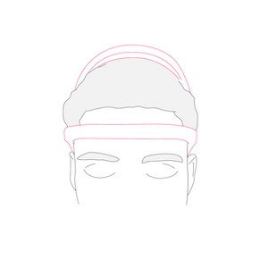 |
 |
Step 2: back of head Place the part of the headband highlighted as far as possible between your hair. It must be in contact with your skin. |
|
Step 3: top of head To ensure optimal support throughout the night, pull the upper arch backwards. |
 |
 |
Step 4: adjustment for long hair If you have long hair, position the back of the headband under your hair to improve the data recorded from the sensors on the back of the headband. |
Starting a Sleep Recording
The Dreem 2 headband measures brain activity and movement during sleep. A_sleep session_ should be activated in the Dreem 2 mobile application prior to wearing the headband as outlined below:
Step 1: Unplug the headband from charge and press the power button on the top of it. The LED will turn blue once the headband is on. The headband should have 60% charge or higher to record a night’s sleep.
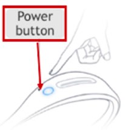
Figure 5:Power on the Dreem 2 headband by pressing the circular button on the front of the band.
Step 2:Open the Dreem 2 App and it will automatically connect to your headband. You will know it is a success if the headband icon has a tick next to it as illustrated below:
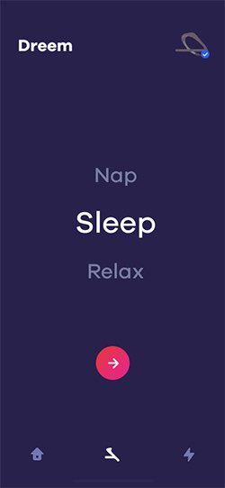
Figure N: The Dreem 2 headset is connected when it has a white tick next to it.
Step 3: Check the signal quality of the Dreem 2 headband sensors to ensure the position of the headband responds high-quality data as outlined below:
| On the home menu,tap on the headband icon at the bottom on your screen (1a) andtap the headband icon in the upper right corner (1b). | 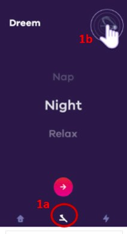 |
| 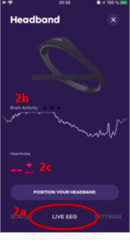 | This will take you to a screen to view details of theHeadband, such as Bluetooth connection status. Tap “LIVE EEG” (2a). At first the signal will vary (2b) and the heart rate will be missing (2c). You may need to wait 5-10 seconds for the signals to stabilise. |
| You will see yourheart rate (3a) and small peaks in your brain activity (3b). Three dots will confirm that the positioning is correct (3c). Tap the “x” at the top of the screen and go to the next step. If these dots do not appear, you should readjust the headband. Repeat the headband positioning instructions again and make sure all DREEM 2 sensors are in good contact. |
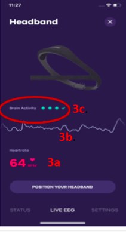 |
Step 4: After exiting theHeadbandscreen you will now be on theDreem 2screen. SelectNight(7.b) and tap thered circular button to continue (7.b).

Figure 7:Selecting a sleep session in the Dreem 2 mobile application.
Step 5: On the Dreem 2 screen there are several options to configure, which will be disabled for this study period. TapSTART NIGHT button to begin recording (Figure 8). The Dreem 2 headband is now configured to record a sleep session (Figure 9). The Bluetooth and Wi-Fi connection to the Dreem 2 headband will automatically turn off to save battery power. Theblue light on the head headband will shut off after a few minutes.
| 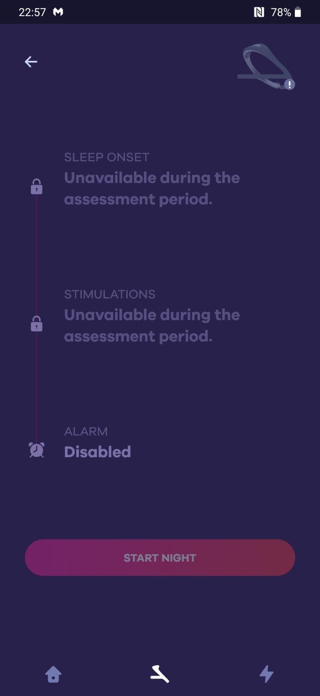 | 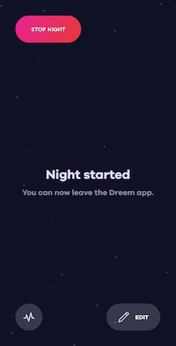 |
| Figure 8: Options are disabled during the study. | Figure 9: When a session starts you can close the app. |
Step 6.Stopping a recording; After waking up, proceed to a short press on the power button to wake the headband up. The button will light blue. Press and hold the power button for 3-5 seconds. The button will blink and turn off.This will end the_sleep session_ and data recording on the headband.
Charging the headband
After wearing the Dreem 2 headband during a night’s sleep it should be placed on charge. Remove the headband from your head and plug in the charging cable to begin charging. The power button will blink orange when the battery is lower than 60%, will blink blue when between 60-99% and will be asteady blue once fully charged. Once on charge, the headband will upload recorded data to Dreem 2 server through Wi-Fi.
Once on charge, the headband will upload recorded data to Dreem 2 server through Wi-Fi.
What will I need to do before I can start using this?
Any account setup required?
No. The provided smartphone will come with Dreem 2 preinstalled for you to begin using.
Needs pairing with hub-device?
Please seeSection 3 for details on how to pair the Dreem 2 headband with the provided smartphone.
Any configuration / assembly required?
Yes. The strap size of the Dreem 2 headband can be adjusted to increase comfort. You should also connect (pair) the Dreem 2 headband with the installed Dreem 2 mobile application on the provided smartphone using Bluetooth. Once connected and only on your first use, please configure the headband to connect to Wi-Fi. Instructions for these three activities are described inSection 3.
Troubleshooting/FAQ
The device / app seems to have stopped working: what should I do?
Battery?
The Dreem 2 headband will last around 12 hours and takes 2-3 hours to fully charge. Please charge your headband in the day after night use to ensure the data can be recorded when worn.
Connectivity issues?
If you are having trouble pairing your headband and smartphone, please ensure that: your headband is sufficiently charged and near the smartphone. If you continue to have issues, please restart your phone and headband by turning both off and on by holding the power button down on each device for 5 seconds.
Need to restart or log in again?
The provided smartphone uses study specific credentials to log into the mobile application. If you have logged out, please contact the research site for how to log into the Dreem 2 app.
Using the device / app is uncomfortable to me: what can I do?
Adjust wear style?
If you feel that the headband is too tight or lose during use, please readjust the headband to find a more comfortable fit. Details of adjusting the headband are described inSection 1.
Adjust usage pattern?
The Dreem 2 headband should be worn during sleep. If you encounter any skin sensitivity or irritation, please contact your local study centre as indicated below.
How can I get help with using this?
If you have any other questions or concerns, please contact your local study centre:
| Newcastle, United Kingdom | Rotterdam, Netherlands | Kiel, Germany | Muenster, Germany |
| Person Name Centre Name Location |
Person Name Centre Name Location |
Person Name Centre Name Location |
Person Name Centre Name Location |
Device return
What do I do when a period of device use is over?
Please store the device in a safe place and make sure it stays clean and dry. Please contact the person that provided you with it to arrange further steps.
Before the device is returned or disposed of: does any data need to be transferred?
The provided Samsung smartphone comes with the Dreem 2 application preinstalled and needs to be configured to access your home Wi-Fi. You can verify that data has been uploaded after a sleep session by opening the Dreem 2 application. If you can see an overview of the sleep session as illustrated in Figure N below, then upload has been a success.
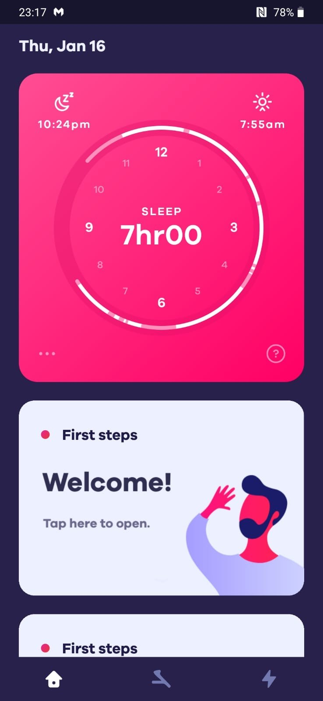
Figure N: A_fter a sleep session you can verify that data was successfully uploaded as an overview of session is presented to you in the mobile application._
If you cannot see an overview of your previous sleep session, then please verify that your headband is connected to Wi-Fi (Section 2). If the problem persists, please contact the study site for help.
Do I need to return the device somewhere?
Please contact the study site that provided you with the Dreem 2 device to arrange further steps. You will have to return it on your final site visit or by post – subject to further individual arrangement.
Returned device processing and cleaning / an application use period for a participant has ended
Do I need to clean the device after each participant returns the device?
Yes. The headbands should be cleaned with alcohol wipes.
What type of material can clean the device?
Alcohol wipescan be used to clean the Dreem 2 headband.
Trigger Data Transfer Protocols?
The Dreem 2 headband stores up to 80-hours of recording internally and uses Wi-Fi to transfer data from the device to Dreem 2’s servers. Each participant must configure the Dreem 2 device to connect with their home Wi-Fi. You should log into Dreem 2’s website to monitor the status of each participant’s data as outlined in Section 2.
Where should the device be returned?
Prior to returning any device, please ensure all data have been transferred and successfully uploaded to the IDEA-FAST hub (link to above).
Device recycling and provisioning
How will the devices and applications be supplied to the study site?
Devices will be shipped by Dreem 2 directly to study sites. The Dreem 2 mobile application will be preinstalled on the provided Samsung smartphones.
What to do with devices once the study site is entirely done with them?
This is still to be decided upon.